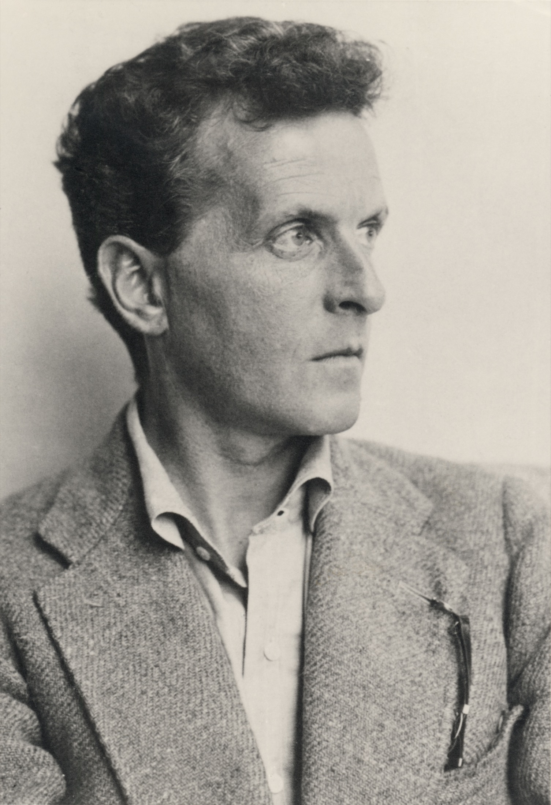

20. gaia · Bira linguistikoa eta postmodernitatea
Bira linguistikoan eta postmodernitatean sartzeko
Komeni da lehen lerrotik ohartaraztea: hau da, itxuraz, ikasturteko gairik heterogeneoena. Bertan elkartzen dira proposizio zenbakituetan idazten zuen logikari vienar bat, euskarari buruz gogoeta egiten duten bi pentsalari euskaldun eta egia handien amaiera aldarrikatzen duen filosofo frantsesen talde bat. Lehen begiratuan ez dute zerikusirik. Baina badute, eta zer duten ulertzea da, hain zuzen, gaiaren giltza; hura gabe galdu egiten zara, eta harekin dena ahokatzen da. Horregatik komeni da poliki sartzea, mapa eskuan dela.
Giltza hitz bakar bat da: hizkuntza. Aurreko gaia fronte-aldaketa batekin itxi zen. Arrazoia galdekatu ondoren —zer espero genezakeen oraindik harengandik mendearen hondamendiaren ostean (§68-§71)—, XX. mendeko pentsamenduaren zati batek pauso bat atzera egin zuen, eta begirada itzuli zuen arrazoia esaten eta pentsatzen den tresnarantz. Susmoa erraza da adierazten, eta irismen luzekoa: agian filosofiaren enigma zahar asko ez dira munduari buruzko benetako arazoak, hizkuntzaren erabilera oker batetik jaiotako nahasteak baizik; eta agian ez da existitzen pentsamendu garbirik, hitzen aurrekorik, baizik eta beti hizkuntza batekin eta hizkuntza baten barruan pentsatzen dugu. Birbideratze handi horri —jada gauzei ez, baizik gauzak ematen zaizkigun hitzei begiratzeko erabakiari— bira linguistikoa deitzen zaio, eta huraxe da gai osoari eusten dion bizkarrezurra.
Bizkarrezur horren gainean hiru zatitan zeharkatuko dugu gaia, orokorretik zehatzera, eta handik ondorioetara. Lehen zatia biraren bertsiorik eragin handienekoarena da: Ludwig Wittgenstein eta filosofia analitikoa, hizkuntzaren analisia filosofiaren metodo bera bihurtzen dutenak (§72). Bigarren zatia teoria orokorretik hizkuntza eta kultura-egoera jakin batera jaisten da —euskal mundura—: beti hizkuntza batetik pentsatzen badugu, zer dakar hizkuntza txiki eta mehatxatu batetik pentsatzeak? Galdera horri erantzuten diote Txillardegik, euskara pentsatzen eta euskaratik pentsatzen duenak (§73), eta Joxe Azurmendik, hizkuntzaren, teknikaren eta pentsamenduaren arteko harremana obra eskerga baten erdigune egiten duenak (§74). Hirugarren zatiak ondoriorik erradikalena ateratzen du: hizkuntzak eta kulturak dena ehuntzen badute, zutik geratzen al da guztiontzat baliozko den egiarik edo aurrerapenik, ala elkarren aurkako kontakizun partikularrak baino ez? Postmodernitatearen auzia da: bertan, pentsalari «hausturazaleek» kontakizun handien amaiera iragartzen dute, eta Jürgen Habermas modernitatea artean bukatu gabeko zeregin gisa defendatzera ateratzen da (§75).
Eduki ezazu, bada, eskura mapa hori, hiru zatiak ideia bakar batean josten baititu. Guztietan, filosofiak zuzenean munduari —edo arrazoiari, abstraktuan— begiratzeari uzten dio, eta bitartekaritzen gainera itzultzen da —hizkuntzara, ama-hizkuntzara, kultura-kontakizunetara—, haien bidez iristen baitzaizkigu mundua eta arrazoia. Wittgensteinek orokorrean aurkitzen du, euskaldunek hizkuntza propio batean bizi dute, eta postmodernoek muturreraino eramaten dute. Horixe da XX. mendeko pentsamenduaren azken bihurgune handia, eta hurrengo orrialdeetan askatu behar ez den haria.
§72 · Wittgenstein eta filosofia analitikoa
Bira linguistikoa. XX. mendearen hasieran, filosofiaren zati handi batek —anglosaxoi munduan, batez ere— gaiz aldatu zuen. Zuzenean «zer da izatea?», «zer da justizia?» edo «existitzen al da Jainkoa?» galdetu beharrean, aurreragoko zerbait galdetzen hasi zen: «zer esan nahi dugu zehazki “izatea”, “justizia” edo “Jainkoa” esaten dugunean?». Oinarrian dagoen ideia da hizkuntza ez dela kristal garden bat, zeinetan barrena mundua besterik gabe ikusten baitugu, tresna korapilatsu bat baizik, sarritan engainatu egiten gaituena; eta filosofia-enigma klasiko asko, egiaz, hizkuntzaren korapiloak direla —gaizki planteatutako galderak, sakon-sakonak diruditenak hitzak gaizki erabili ditugulako soilik—. Hizkuntza aztertzea eta argitzea bihurtzen da, hala, filosofiaren lehen zeregina. Korronte hori, Gottlob Frege eta Bertrand Russell (1872-1970) bezalako logikarietatik abiatu eta Vienako Zirkuluaren positibismo logikoan (§54) luzatzen dena, filosofia analitikoa izenez ezagutzen da, eta haren figura nagusia —eta bereziena, gainera— Ludwig Wittgenstein da.

Bizitza bat, bi erditan. Ludwig Wittgenstein (1889-1951) Vienan jaio zen, Austria-Hungariako Inperioko familia aberats eta kultuenetako batean, eta bere fortunari uko egin zion ia fraide-soiltasunez bizitzeko. Haren biografiak kondairatik badu zerbait —ingeniari izan zen, soldadu Lehen Mundu Gerran, herri-eskolako maisu, monasterio bateko lorezain eta, bi aldiz, irakasle Cambridgen—, baina hemen axola duena da haren pentsamendua bi etapa hain desberdinetan zatitzen dela, non, gehiegikeriarik gabe, bi Wittgenstein daudela esaten baita. Harrigarriena da bigarrenak bere indarren zati on bat lehena errefutatzeari eskaini ziola. Etapa bakoitza liburu batean gauzatzen da, eta bien artean hogeita hamar urte daude tartean, eta errotiko aldaketa bat hizkuntza zer den ulertzeko moduan.
Lehen Wittgenstein: hizkuntzaren mugak. Tractatus logico-philosophicus (1921) liburu labur bat da, proposizio zenbakituetan idatzia, neurriz kanpoko anbizio batekoa: behin betiko finkatu nahi du zer esan daitekeen zentzuz. Haren tesi nagusia esanahiaren irudi-teoria da: hizkuntzak esanahia du proposizioak munduko egitateen irudiak edo erretratuak direlako. Proposizio batek zentzua du gauza-egoera posible bat deskribatzen badu —errealitatean gerta litekeen ala gerta ez litekeen zerbait—, eta egiazkoa da gauza-egoera hori benetan gertatzen bada. Hemendik muga zorrotz bat ondorioztatzen da: egitateak irudikatzen dituzten proposizioek bakarrik dute zentzua; hau da, azken batean, natura-zientziarenek. Gainerako guztiak —metafisikaren, etikaren, estetikaren, erlijioaren baieztapenek— munduko egitateez harago dagoenaz hitz egin nahi du, eta, horregatik, dio Wittgensteinek, hizkuntzaren mugak gainditzen ditu eta, zorrotz hitz eginda, zentzurik gabea da. Horrekin ez ditu gutxiesten: garrantzitsuena ukitzen dutela uste du, mistikoa, esan ezin dena baina erakutsi egiten dena. Baina horretaz filosofiak ezin du teoriarik egin. Hortik dator liburua ixten duen proposizio ospetsua, apala eta ebakitzailea aldi berean:
Hitz egin ezin daitekeen hartaz, isilik egon behar da.
—Ludwig Wittgenstein, Tractatus logico-philosophicus (1921)
Bigarren Wittgenstein: hizkuntza-jokoak. Urte batzuk geroago, jada Cambridgera itzulita, Wittgenstein konbentzitzera iritsi zen bere lehen liburua errakuntza baten gainean eraikita zegoela: suposatu zuen hizkuntzak funtzio bakar bat duela —egitateak erretratatzea—, egiaz milaka dituenean. Autokritika horrek egituratzen ditu Ikerketa filosofikoak (1953an argitaratuak, egilea ordurako hila zela), bigarren Wittgensteinen obra. Haren nozio gakoa hizkuntza-jokoa (Sprachspiel) da. Hizkuntza ez da munduaren ispilu bat, jarduera bat baizik, bizitzarekin ehundua: hitzekin aginduak ematen ditugu, agurtu egiten dugu, txantxetan aritzen gara, otoitz egiten dugu, hitzeman egiten dugu, iraindu egiten dugu, txisteak kontatzen ditugu, kalkuluak egiten ditugu… Erabilera horietako bakoitza «joko» bat da, bere arau propioekin, eta hitz baten esanahiaz galdetzea haren erabileratik kanpo, xake-pieza batek partidatik kanpo zer «esan nahi duen» galdetzea bezain absurdua da. Hortik dator haren formularik eragin handienekoa: hitz baten esanahia haren erabilera da hizkuntzan. Eta erabilera horiek praktika eta ohitura partekatuetan errotuta daudenez —Wittgensteinek bizi-formak deitzen dituenetan—, ez dago hizkuntza pribaturik, ez hitzaren aurreko pentsamendu garbirik: hitz egitea, berez, bizitza komun batean parte hartzea da. Filosofiak, orduan, ofizioz aldatzen du. Ez dagokio teoria handiak eraikitzea, nahasteak desegitea baizik: erakustea filosofia-arazo klasiko asko hortik jaiotzen direla, hitzak zentzua duten jokotik atera eta «hutsean biraka» jarraraztetik. Filosofatzea, bigarren etapa honetan, hizkuntzaren terapia bat da.
Lehen eta bigarren Wittgensteinen artean ia dena aldatzen da, baina hari batek irauten du: hitzek sorgindu egiten gaituztela eta zorroztasunez pentsatzeak nola hitz egiten dugun zaintzea eskatzen duela dioen uste osoak. Ikasgai horrek —ez dagoela pentsamendurik hizkuntzarik gabe, eta hizkuntza bakoitza bizi-forma bat dela— oihartzun oso zehatza hartzen du jasotzen duenak, gainera, hizkuntza gutxiengotu batetik pentsatzen duenean. Bira linguistikoaren beste aurpegi horretara, euskaratik egiten denera, igaroko gara orain.
§73 · Txillardegi: hizkuntzaren filosofia euskaratik
Intelektual osoa. José Luis Álvarez Enparantza (1929-2012), Txillardegi ezizenez ezaguna, XX. mendeko euskal kulturaren figura erabakigarrienetako bat izan zen, eta sailkatzen zailenetako bat: eleberrigilea, hizkuntzalaria, militante politikoa eta saiakeragilea, dena izan zen aldi berean, eta pasio bakar batek mugituta: euskarak. Ingeniaria formazioz eta donostiarra jaiotzez, Leturiaren egunkari ezkutuarekin (1957) sartu zen euskal letretan: euskarazko lehen eleberri existentzialistatzat jotzen da; barne-bakarrizketa bat, Sartreren eta Camusen giroaren zordun (§64), euskarazko narratiba landa-giroko gai kostunbristetatik atera eta gizaki urbano garaikidearen larriduran bete-betean sartu zuena. Gainera, gerraosteko euskal nazionalismoaren figura zentral bat izan zen: 1959an ETAren sortzaileen artean egon zen —urte batzuk geroago urrundu egingo zen erakundetik—, eta militantzia horrek, frankismopean, kartzela eta erbeste luze bat kostatu zizkion. Baina hemen ez zaigu interesatzen ez eleberrigilea, ez politikaria, hizkuntzaren pentsalaria baizik: hizkuntza jakin bati buruzko galdera —euskarari buruzkoa— lehen mailako gogoeta filosofiko bihurtu zuen gizona.
Euskara batuaren aldeko borroka. Haren lehen ekarpen handia praktikoa izan zen, teorikoa baino lehen. XX. mendearen erdialdera, euskara arau idatzi komunik gabeko dialekto-mosaiko bat zen, eta horrek kondenatu egiten zuen: hizkuntza zatikatu bat ezin da erabili irakaskuntzan, administrazioan edo hedabideetan, eta etxeko esparrura baztertua geratzen da. Txillardegi euskara batuaren bultzatzaile setatsuenetako bat izan zen: Euskaltzaindia 1968tik aurrera finkatzen hasi zen literatura-estandar komunarena. Itxuraz teknikoa zen borroka haren azpian, uste oso filosofiko batek taupaka ziharduen: hizkuntza bat ez da forma zaharren museo bat, ukitu gabe kontserbatu beharrekoa, tresna bizi bat baizik, eta, mundu modernoan bizirik irauteko, dena esan ahal izan behar du —zientzia, zuzenbidea, filosofia— arau partekatu batekin. Euskara defendatzea ez zen, harentzat, nostalgia-keinu bat, etorkizun-keinu bat baizik.
Hizkuntza eta pentsamendua. Hemen dago haren gune propioki filosofikoa, eta §72ko bira linguistikoarekin ahaidetzen duena. Txillardegik defendatzen du, Wilhelm von Humboldt erromantikoarenganaino atzera doan ideia zahar baten ildotik, hizkuntza bakoitzak mundua ikusteko eta antolatzeko modu propio bat gordetzen duela: haren hiztegiak, gramatikak eta esamoldeek errealitatea mozten dute beste inongo hizkuntzarenarekin bat ez datorren eran. Ez dugu soilik hizkuntza batean hitz egiten; zentzu batean, harekin eta harengandik pentsatzen dugu, halako moldez non hizkuntza bat benetan ikastea mundua bizitzeko era oso bat jaraunstea baita —Wittgensteinen bizi-formetatik oso hurbil dagoen zerbait (§72)—. Tesi horretatik ondorio larri bat ateratzen du: hizkuntza bat hiltzen denean, ez da galtzen soilik beste batekin trukagarri den kode bat, munduaren ikuspegi errepikaezin bat baizik, gizaki izateko modu bat, inork berriro izango ez duena. Horregatik, hizkuntza baten desagerpena, Txillardegirentzat, gizateria osoaren pobretze bat da, eta ez istripu lokal huts bat.
Soziolinguistika militante bat. Uste oso horretatik jaio zen haren lanik helduena, jada unibertsitatean soziolinguistika-irakasle zela. Soziolinguistikak hizkuntza aztertzen du, ez sistema abstraktu gisa, bere bizitza sozialean baizik: nork hitz egiten duen, zer egoeratan, zenbateko prestigioarekin eta zer presiopean. Txillardegik zorroztasunez aztertu zituen euskara bezalako hizkuntza gutxiengotu bat beste hizkuntza nagusi batek baztertzeko mekanismoak —diglosia, non hizkuntza indartsuak erabilera kultuak eta prestigiozkoak beretzat gordetzen baititu, eta ahula esparru intimo eta familiarrean zokoratzen, haren ordezkapenerako lehen urratsa—. Haren diagnostikoa ez zen etsipenezkoa, borrokarakoa baizik: hizkuntza bat prozesu sozial eta politikoengatik galtzen bada, ekintza sozial eta politiko kontziente batez ere salba daiteke. Pentsatu zuen, hitz batean, euskara ez erlikia gisa, baizik eta arazo filosofiko eta proiektu kolektibo gisa, eta horretan aitzindari izan zen. Kezka horrek berak —hizkuntza, pentsamenduaren etxe— egituratzen du gai honetako bigarren euskal pentsalariaren obra, hats sistematikoago eta filosofikoagokoa.
§74 · Joxe Azurmendiren ekarpena
Euskaraz pentsatu zuen filosofoa. Joxe Azurmendi (Zegama, 1941) da, ziurrenik, azken hamarkadetako euskarazko filosofo eta saiakeragilerik garrantzitsuena, eta neurri on bat ikusteko noraino iritsi den Txillardegik defendatzen zuen proiektua. Filosofian Erroman eta Alemanian prestatua, urte luzez Euskal Herriko Unibertsitateko irakasle eta Euskaltzaindiko kide, Azurmendik obra eskerga bat eraiki du —dozenaka liburu—, non Europako pentsamenduaren tradizio handia (Hegel, Marx, Nietzsche, Frankfurteko Eskola, Heidegger) euskal kulturaren berezko galderekin elkarrizketan baitago. Txillardegik euskarak pentsa zezakeela aldarrikatu bazuen, Azurmendik frogatu egin zuen: filosofiarik zorrotzenerako gai den hizkuntza egin zuen euskara, eta, horrekin, bira linguistikoaren tesiaren adibide praktikorik biribilena eman zuen (§72-§73).
Hizkuntza, herria eta pentsamendua. Haren gogoetaren erdigunea, hain zuzen ere, hizkuntza, komunitatea eta identitatea lotzen dituen bilbea da. Azurmendik sakon aztertu du herri-arimaren ideia erromantiko zaharra (Herderren eta Humboldten Volksgeista), zeinaren arabera herri bakoitzak arima kolektibo bat baitu, bere hizkuntzan adierazten dena. Baina modu kritikoan egiten du, ez debozioz: ez du besterik gabe onartzen esentzia nazionalen erromantizismo hori —erraz endekatzen baita mito arriskutsu bihurtzeraino—, baina ez du sineskeria huts gisa gutxiesten ere. Haren galdera finagoa da: zer dago egiatik hizkuntza batek komunitate-forma bati eta pentsamendu-forma bati eusten diela dioen intuizioan, eta non hasten da alegia? Zorroztasun bera aplikatu zien espainolen eta euskaldunen elkarren aurkako estereotipoei —Espainolak eta euskaldunak da haren libururik ezagunenetako baten izenburua—, identitate bakoitzak bere buruaz eta besteaz fabrikatzen dituen irudiak desmuntatuz. Norbere identitatea pentsatzea nork bere burua engainatu gabe: horra haren ikasgairik handienetako bat.
Modernitatea, teknika eta sekularizazioa. Azurmendiren obrak askogatik gainditzen du euskal auzia. Teknikaz eta hark bizitza modernoaren gainean duen botereaz hausnartu du —Heideggerren eta Ortegaren ildotik—, sekularizazioaz eta Jainkorik gabe geratu den mundu batean erlijioari dagokion lekuaz, eta humanismoaren patuaz eta haren kontraesanez. Fronte horietan guztietan kezka bera dabilkio: modernitatea ulertzea —nondik datorren, zer agindu zuen eta zer ez duen bete—, horixe baita, hain zuzen ere, mendeko azken eztabaidaren gudu-zelaia. Horrekin, gai honetako bi euskal pentsalariek Europako filosofiaren ibilgu handira itzularazten gaituzte, eta haren eztabaidarik sutsuenaren atarian uzten: modernitatea jarraitzea komeni den proiektu baliotsu bat izan ote zen, ala abandonatzea dagokion kontakizun agortu bat.
§75 · Ondare postmodernoa: Habermas hausturazaleen aurrean
Zer den postmodernitatea. Modernitatea deitzen diogu, zentzu filosofikoan, Ilustraziotik jaiotako proiektu handiari (§47): gizakia sineskeriatik askatzeko gai den arrazoi unibertsal batenganako konfiantzari, atsedenik gabe aurrera egiten duen zientzia batenganakoari eta emantzipaziorantz doan historia batenganakoari. Bada, XX. mendearen azken herenean, promesa horietan fedea galdu duen gogo-aldarte bat zabaltzen da. Giro horri —eta hura adierazten duten filosofiei— postmodernitatea deitzen zaio. Terminoa filosofian sortu zuena Jean-François Lyotard frantsesa (1924-1998) izan zen, liburu labur eta aipatu-aipatu batean: Baldintza postmodernoa (1979). Haren definizioa ospetsu bihurtu da:
Muturreraino sinplifikatuz, «postmodernotzat» jotzen da metakontakizunekiko sinesgogortasuna.
—Jean-François Lyotard, Baldintza postmodernoa (1979)
Kontakizun handien deskreditua. Metakontakizun edo kontakizun handi bat da modernitateak denari zentzua eta norabidea emateko eta jakintza legitimatzeko erabiltzen zituen historia handi horietako bat: herritarraren emantzipazioa arrazoiaren bidez (Ilustrazioa), Espirituaren aurrerabidea askatasunerantz (Hegel), proletalgoaren askapena eta klaserik gabeko gizartea (Marx, §58), zientziaren aurrerapen mugagabea. Bakoitzak amaiera zoriontsu bat agintzen zuen, eta gainerako guztia neurtzeko makila bat eskaintzen. Tesi postmodernoa da kontakizun horiek jada ez dutela zutik irauten: mundu-gerren eta totalitarismoen mendeak (§68-§69) gehiegitan gezurtatu ditu, haietan sinesten jarraitzeko. Eta, erori ondoren, geratzen dena ez da kontakizun hobe bat, kontakizun txiki, lokal eta partzialen aniztasun bat baizik —hizkuntza-joko asko, Wittgensteinen zentzuan (§72), Lyotardek maileguan hartzen duenez—, eta haietako bakar bat ere ezin da jada besteen epaile goren bihurtu. Ez dago Jainkoaren ikuspunturik, handik guztien egia ordenatzeko.
Susmoaren erradikalizazioa. Pentsalari «hausturazaleek» —Lyotardek, Michel Foucaultek, Jacques Derridak eta beste batzuek— azkeneraino eramaten dute susmoaren maisuen ondarea. Nietzscherengandik (§61) jasotzen dute «ez dago egitaterik, interpretazioak baizik», eta hortik ondorioztatzen dute ez dela existitzen egia objektiborik, kultura eta perspektiba bakoitzaren mendeko eraikuntzak baizik. Foucaultengandik (§59) genealogia hartzen dute, desmaskaratze-metodo gisa: garai bakoitzak «egia» eta «arrazoi» deitzen duena boterearekin bilbatuta dago —jakitea eta boterea bereiztezinak dira—, halako moldez non objektibotasun-nahi ororen atzean beti baitaude interesak eta menderakuntza-harremanak. Arrazoi handia eta Egia handia, maiuskulaz idatziak, partikularraren maskara gisa geratzen dira agerian. Hemendik dator haien ezaugarririk bereizgarriena, eta polemikoena: erlatibismoa, hau da, egia guztiak eta balio guztiak oinarri unibertsalik gabeko gizarte-eraikuntzak direlako ideia.
Habermasen erantzuna: proiektu bukatugabe bat. Deriba horren aurrean altxatzen da Frankfurteko Eskolaren bigarren belaunaldiko ahotsik eragin handienekoa, Jürgen Habermas (1929), Popperrekin izandako auzian ezagutu genuena (§70). Haren tesia, 1980an formulatua, bere izenburua bezain argia da: modernitatea proiektu bukatugabe bat da. Ez du porrot egin, dio Habermasek: bukatu gabe dago. Eta arrazoiari uko egitea, postmodernoek egiten duten bezala, bidegabea eta arriskutsua da aldi berean —bidegabea, alea lastoarekin batera botatzen duelako; arriskutsua, arrazoia abandonatzen duena armarik gabe geratzen delako arrazoigabekeriaren aurrean—. Alabaina, Habermasek ez du defendatzen Frankfurtek salatu zuen arrazoi zaharra (§68). Haren mugimendu erabakigarria bi arrazionaltasun bereiztea da. Bata arrazoi instrumentala da, natura menderatzeko biderik eraginkorrenak kalkulatzen dituena —lanaren eta teknikaren arrazoia—. Bestea arrazoi komunikatiboa da, pertsonen artean gauzatzen dena, elkar ulertu nahian elkarrizketan ari direnean —interakzioaren arrazoia, hizkuntzan bizi dena1—. Modernoen errakuntza —eta baita lehen frankfurtarrena ere— lehena bakarrik ikustea izan zen; postmodernoena, sinestea, instrumentala usteldu ondoren, ez zela bat ere geratzen. Habermasek bigarrena erreskatatzen du.
Egia adostasun gisa. Nola salbatzen du arrazoi komunikatiboak erlatibismoak galdutzat ematen duena? Egiaren ideia bera aldatuz. Arrazoi instrumentalarentzat, baieztapen bat egiazkoa da egitateekin bat badator. Arrazoi komunikatiboarentzat, aldiz, baliozkoa dena —bidezkoa dena, giza auzietan egiazkoa dena— da eragindako guztiok elkarrizketa libre batean adostu genezakeena: egia adostasun gisa. Baina ez du edozein akordiok balio; baldintza idealetan lortu behar da —Habermasek hizketa-egoera ideala deitzen duen horretan—: inor ez dadila baztertua izan, ez behartua; guztiek hitz egin ahal izan dezatela, eta entzunak izan daitezela; zintzoki bila dadila elkar ulertzea, eta onartutako indar bakarra argudiorik onenarena izan dadila. Horrela adostutako arau bat edo egia bat ez dira indartsuen inposizio bat, arrazoi partekatu baten fruitua baizik. Horregatik, Habermasek, berak ere bere «bira linguistikoa» egiten baitu, hausturazaleen kontrako noranzkoan egiten du: haientzat, hizkuntzak egia unibertsal oro desegiten du elkarrekin neurtu ezineko jokoetan; harentzat, hizkuntza —elkar ulertzera bideratua den aldetik— da, hain zuzen ere, arrazoi unibertsal eta ez-bortitz bat oraindik posible den lekua.
Balantzea. Auziak bizirik dirau, eta komeni da bi aldeak haztatzea. Postmodernoek asmatu egiten dute ohartarazpen baliotsu batean, Frankfurten eta Arendten oinordekoa: bakartzat eta osotzat bere burua daukan arrazoi orok desberdina zapaltzeko joera du, eta komeni da mesfidati begiratzea Egia maiuskuladunaren izenean hitz egiten duela dioenari. Anitzari, bazterrekoari eta isilarazitako ahotsei eskaini dieten arreta emankorra izan da. Baina erlatibismo erradikala hauskorra da bi aldetatik. Lehenik, bere burua errefutatzen du: «ez dago egia unibertsalik» baieztatzea, hain zuzen ere, egia unibertsal bat proposatzea da2. Eta, bigarrenik, kritika desarmatzen du: guztiontzat balio duen egiarik eta justiziarik ez badago, zeren izenean salatu gezur bat, injustizia bat edo genozidio bat? Habermasek irtenbide bat eskaintzen du, dogmatismora itzultzen ez dena eta «dena zilegi da» horretan erortzen ez dena: arrazoi apal eta elkarrizketazale bat, bere egiak inposatzen ez dituena, baina haiek elkarrekin bilatzeari uko egiten ez diona.
Azken eztabaida honekin ixten da susmoaren maisuek ireki zuten arku luzea (§55), mendearen hondamendiak muturreraino eraman zuena (§68): zer espero dezakegun oraindik arrazoiarengandik galderak hemen jasotzen du bere erantzunik berriena —ez antzinako konfiantza inozoa, ez abandonu postmodernoa, baizik eta elkarrizketan bizirik irauten duen arrazoi eskarmentudun bat—. Baina kontakizun handiek isilarazitako ahotsekiko arreta postmoderno horrek berak eskutik garamatza hurrengo gaira. Zeren izan baitzen ahots bat, filosofiaren historia ia osoan isilik egon zena —gizateriaren erdiarena—, eta haren aldarrikapena XX. mendeko pentsamenduaren gertakari handienetako bat da (§76).
Hau da §70ean iragarrita geratu zen banaketa: gizakiak bi arrazionaltasun-modu oinarrizko eta murriztezin ditu, lanarena (menderatzea) eta interakzioarena (elkar ulertzea), eta haiei interes desberdinak dagozkie —teknikoa, praktikoa eta emantzipatzailea—. Arrazoi komunikatiboaren muina, han atzeratu zena, hemen garatzen da.↩︎
Baieztapen oro benetan balio unibertsalik gabeko kultura-eraikuntza bat baldin bada, orduan baieztapen oro halakoa delako baieztapena ere halakoa da; eta, orduan, ez dago hura sinesteko arrazoirik. Erlatibismo absolutuak bere isatsari hozka egiten dio.↩︎